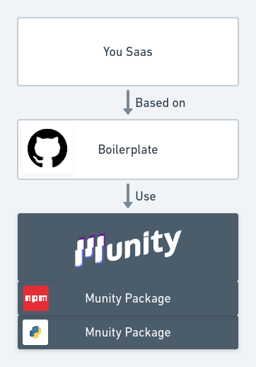

How to use
How to use Munity
- Munity is an open source fullstack framework so you can read all the source code here : https://github.com/munityapps/munity
- To use Munity you need a boilerplate

- A boilerplate is an already ready to use application that is plugged to Munity through packages.
- Blank boilerplate : https://github.com/munityapps/blank_boilerplate
- Backoffice, Dataviz and other boilerplate will come soon
Get started
Start Munity, the easy way
git clone https://github.com/munityapps/blank_boilerplate
cd blank_boilerplate
cp ./env.sample ./.env
./scripts/start.sh
You can access munity on http://localhost:3000
Start Munity step by step
Get munity boilerplate
git clone https://github.com/munityapps/blank_boilerplate
cd blank_boilerplate
Start Munity services
docker-compose up -d
Create your database and migrate
docker-compose exec db psql -U munityapps -c "create database munity"
docker-compose exec api python manage.py migrate
Database is now available, restart API
docker-compose restart api
Create your first user
docker-compose exec api python manage.py createsuperuser
Start frontend
cd app ; yarn install ; yarn start